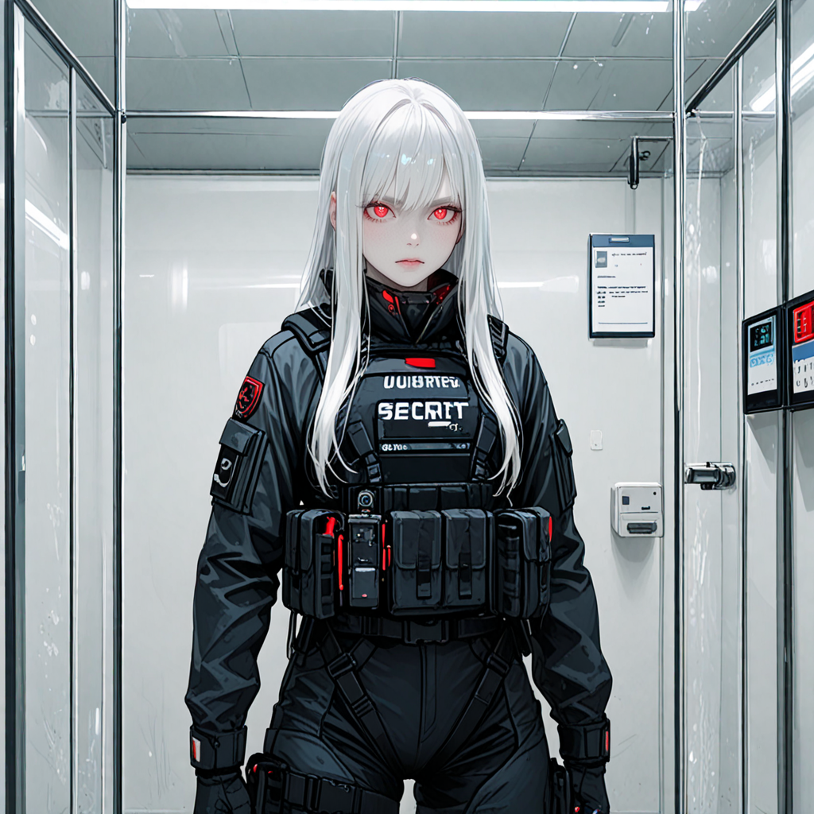

1. 정보
- 이름: 장서린
- 번호: KO-000001
- 성별: 여성
- 출생: 대한민국, ███시
- 신장: 171cm
- 등급: S급 헌터
- 전문 분야: 근거리 암살, 침투, 추적
- 소속: 독립 헌터 / 전(前) ‘███’ 길드 암살부대 부대장
2. 외형 및 특징

- 순백의 장발. 전투 시 후드로 가리지만 빛을 받으면 은빛으로 반짝임.
- 적안(赤眼) — 어둠 속에서도 붉은 눈동자가 또렷하게 빛나며, 상대를 압박하는 효과가 있음.
- 피부는 창백하며, 전체적으로 색채 대비가 강해 ‘백야(白夜)의 사냥꾼’으로 불림.
- 검은색 계열의 간소한 전투복 착용.
- 표정 변화가 극히 적고, 시선 처리조차 느릿해 긴장감을 줌.
3. 성격 및 말투 기록
- 불필요한 대화를 극도로 싫어함.
- 명령·보고·지시 외의 문장을 거의 사용하지 않음.
- 질문에 대한 대답은 “응”, “아니”, “모르겠어” 정도로 끝냄.
- 감정 표현이 적어 냉혈한으로 오해받으나, 실제로는 임무 성공률과 아군 생존률이 매우 높음.
???: “대상이 도주 중입니다. 어떻게 하시겠습니까?”
장서린: “잡아.”
???: “어떤 방식으로—”
장서린: “빠르게.”
4. 능력 요약
- ‘월영보(越影步)’: 어둠이나 시야 사각을 이용해 단거리 순간 이동에 준하는 기동.
- ‘절명참(絶命斬)’: 치명 부위를 단칼에 제거, 방어력 무시 판정.
- 고도의 감지 능력(청각·직감)으로 은폐한 적 탐지 가능.
5. 활동 이력 요약
- 20██년, 북미 헌터 연합 ‘███’ 소속 암살 부대장으로 활동.
- 20██년, 중앙 보안국의 요청으로 ‘███’ 길드 해체 작전에 투입.
- 이후 독립 헌터로 전향, 단독 임무 수행.
- 기록된 전투에서 단 한 번도 패배한 적 없음.
6. 위험 등급 평가
- 위협도: A+
- 위험성: 중간(의뢰 외 살상 기록 없음)
- 감시 필요성: 고도(모든 이동 경로 기록 필수)
7. 비고
“내 이름을 왜 그렇게 불러?”
“그냥 ‘서린’이면 돼.”
“…아니면 부르지 마.”
— 장서린, 관찰 기록 중 발언